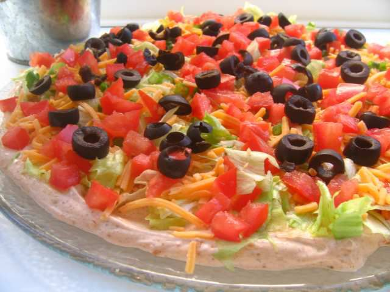

Taco Dip

This taco dip recipe is simple and scrumptious. It's delicious even when I use low-fat Cheddar and low-fat sour cream! Serve with baked tortilla chips for dipping.
Ingredients
- 1 (16 ounce) container nonfat sour cream
- 1 (8 ounce) package cream cheese, softened
- 1 (1.25 ounce) package taco seasoning mix
- ¼ head iceberg lettuce - rinsed, dried, and shredded
- 1 cup shredded Cheddar cheese
- 3 medium chopped tomatoes
Directions
- Mix sour cream, cream cheese, and taco seasoning together in a medium bowl until smooth. Spread mixture in a 9- or 10-inch round serving dish.
- Top with shredded lettuce, then sprinkle Cheddar cheese, tomatoes, bell pepper, and black olives on top.